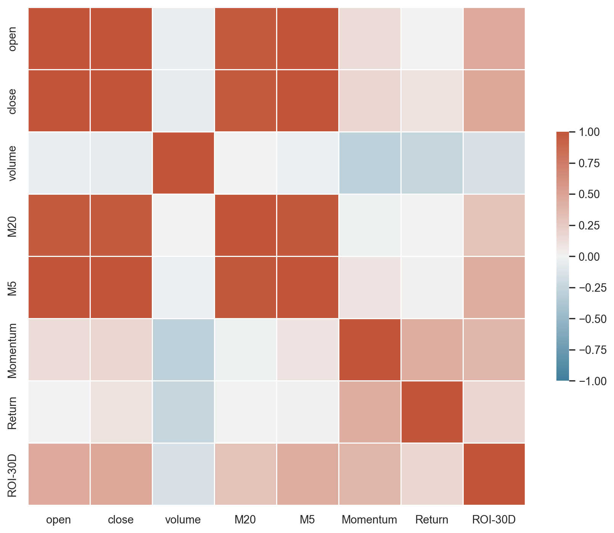
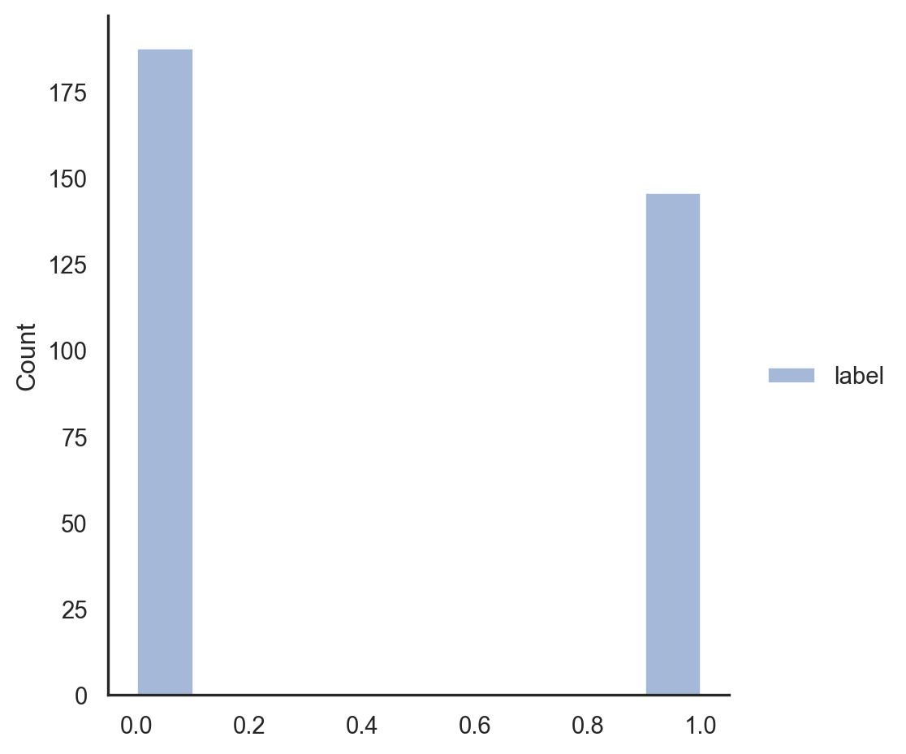
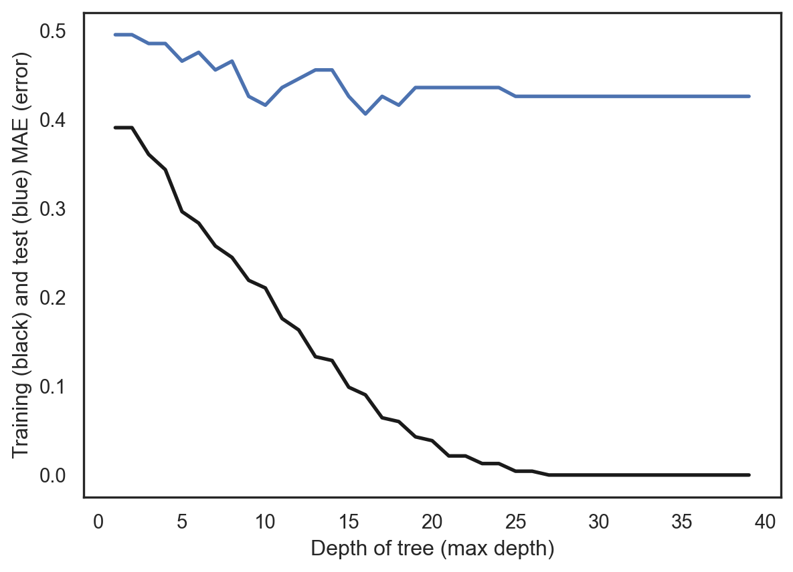
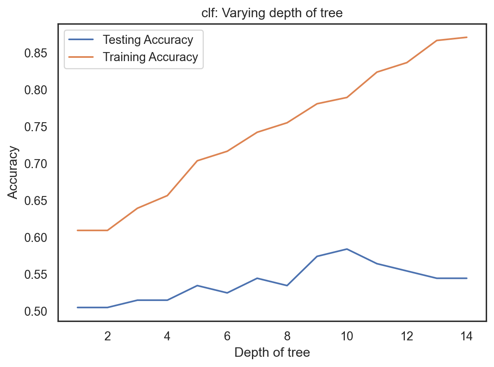

A decision tree is a predictive model used in machine learning; it depicts the mapping relationship between object attributes and object values. Each leaf node in the tree corresponds to the value of the item represented by the path from the root node to that leaf node, whereas each diverging path in the tree represents a potential attribute value. Data mining methods that typically employ decision trees include data analysis and prediction.
My data contains multiple columns with numerical values, such as open price, close price, volumn, etc. Our labels are divided into 0 and 1. 1 means that the price of the cryptocurrency moved more than 0.3 on the day, and 0 means that the price of the cryptocurrency moved less than 0.3.
Since the data sample is not very large, decision trees can be used to analyze small and medium-sized data. Technical teams and stakeholders may easily understand a decision tree model since it is so obvious.
Library packages
Code
import pandas as pdimport numpy as npimport matplotlib.pyplot as pltimport seaborn as snsimport sklearnfrom sklearn import treefrom sklearn.metrics import classification_report, confusion_matriximport warningsimport randomfrom collections import Counterwarnings.filterwarnings('ignore')from sklearn.metrics import precision_recall_fscore_supportfrom sklearn.tree import DecisionTreeClassifier # Import Decision Tree Classifierfrom sklearn.model_selection import train_test_split # Import train_test_split functionfrom sklearn import metrics #Import scikit-learn metrics module for accuracy calculation
Code
cur = pd.read_csv('../../data/01-modified-data/x_naive_bayes_r.csv')corr = cur.corr()# INSERT CODE TO SHOW A HEAT MAP FOR THE X FEATURESsns.set_theme(style="white")f, ax = plt.subplots(figsize=(11, 9)) # Set up the matplotlib figurecmap = sns.diverging_palette(230, 20, as_cmap=True) # Generate a custom diverging colormapsns.heatmap(corr, cmap=cmap, vmin=-1, vmax=1, center=0, square=True, linewidths=.5, cbar_kws={"shrink": .5})plt.show();

Figure 1: Heatmap
Code
y = pd.read_csv('../../data/01-modified-data/y_naive_bayes_r.csv')y.rename(columns={'0':'label'}, inplace=True)sns.displot(y)plt.show()

Figure 2: Distribution of Class Labels
Figure 2 shows the distribution of the class labels. Theoretically, if our model is accurate enough, the distribution of the class labels of our predictions will be very close to figure 2.
Baseline Model for Comparison
Code
y_0 = y[y['label'] ==0].count().valuesy_1 = y[y['label'] ==1].count().valuesprint('The number of 0 in the label is', y_0)print('The number of 1 in the label is', y_1)
The number of 0 in the label is [188]
The number of 1 in the label is [146]
Code
import numpy as npimport randomfrom collections import Counterfrom sklearn.metrics import accuracy_scorefrom sklearn.metrics import precision_recall_fscore_supportdef generate_label_data(class_labels, weights,N=10000): y=random.choices(class_labels, weights = weights, k = N)print("-----GENERATING DATA-----")print("unique entries:",Counter(y).keys()) print("count of labels:",Counter(y).values()) # counts the elements' frequencyprint("probability of labels:",np.fromiter(Counter(y).values(), dtype=float)/len(y)) # counts the elements' frequencyreturn ydef random_classifier(y_data): ypred=[]; max_label=np.max(y_data);#print(max_label)for i inrange(0,len(y_data)): ypred.append(int(np.floor((max_label+1)*np.random.uniform(0,1))))print("-----RANDOM CLASSIFIER-----")print("count of prediction:",Counter(ypred).values()) # counts the elements' frequencyprint("probability of prediction:",np.fromiter(Counter(ypred).values(), dtype=float)/len(y_data)) # counts the elements' frequencyprint("accuracy",accuracy_score(y_data, ypred))print("percision, recall, fscore,",precision_recall_fscore_support(y_data, ypred))print("\nBINARY CLASS: NON-UNIFORM LOAD")y_ram=generate_label_data([0,1],[0.56,0.44],10000)random_classifier(y_ram)
BINARY CLASS: NON-UNIFORM LOAD
-----GENERATING DATA-----
unique entries: dict_keys([1, 0])
count of labels: dict_values([4372, 5628])
probability of labels: [0.4372 0.5628]
-----RANDOM CLASSIFIER-----
count of prediction: dict_values([5122, 4878])
probability of prediction: [0.5122 0.4878]
accuracy 0.5044
percision, recall, fscore, (array([0.56888069, 0.44299102]), array([0.49307036, 0.51898445]), array([0.52826956, 0.4779861 ]), array([5628, 4372]))
np.random.seed(1234)from sklearn.model_selection import train_test_split# Split dataset into training set and test setX_train, X_test, y_train, y_test = train_test_split(X, y, test_size=0.3, random_state=1) # 70% training and 30% testprint("x_train.shape :",X_train.shape)print("y_train.shape :",y_train.shape)print("X_test.shape :",X_test.shape)print("y_test.shape :",y_test.shape)
from sklearn.metrics import mean_absolute_percentage_errorfrom sklearn.metrics import mean_absolute_errorfrom sklearn.tree import DecisionTreeClassifier# HYPER PARAMETER SEARCH FOR OPTIMAL NUMBER OF NEIGHBORS hyper_param=[]train_error=[]test_error=[]# LOOP OVER HYPER-PARAMfor i inrange(1,40):# INITIALIZE MODEL model = DecisionTreeClassifier(max_depth=i)# TRAIN MODEL model.fit(X_train,y_train)# OUTPUT PREDICTIONS FOR TRAINING AND TEST SET yp_train = model.predict(X_train) yp_test = model.predict(X_test)# shift=1+np.min(y_train) #add shift to remove division by zero err1=mean_absolute_error(y_train, yp_train) err2=mean_absolute_error(y_test, yp_test) # err1=100.0*np.mean(np.absolute((yp_train-y_train)/y_train))# err2=100.0*np.mean(np.absolute((yp_test-y_test)/y_test)) hyper_param.append(i) train_error.append(err1) test_error.append(err2)if(i==1or i%10==0):print("hyperparam =",i)print(" train error:",err1)print(" test error:" ,err2)
hyperparam = 1
train error: 0.3905579399141631
test error: 0.49504950495049505
hyperparam = 10
train error: 0.21030042918454936
test error: 0.4158415841584158
hyperparam = 20
train error: 0.03862660944206009
test error: 0.43564356435643564
hyperparam = 30
train error: 0.0
test error: 0.42574257425742573
Code
# Generate plotplt.plot(hyper_param,train_error ,linewidth=2, color='k')plt.plot(hyper_param,test_error ,linewidth=2, color='b')plt.xlabel("Depth of tree (max depth)")plt.ylabel("Training (black) and test (blue) MAE (error)")i=1print(hyper_param[i],train_error[i],test_error[i])
2 0.3905579399141631 0.49504950495049505

Figure 4: MAE vs Dept of Tree
Code
# Setup arrays to store train and test accuraciesdep = np.arange(1, 15)train_accuracy = np.empty(len(dep))test_accuracy = np.empty(len(dep))# Loop over different values of kfor i, k inenumerate(dep):# Setup a Decision Tree Classifier clf = tree.DecisionTreeClassifier(max_depth=k)# Fit the classifier to the training data clf.fit(X_train, y_train)#Compute accuracy on the training set train_accuracy[i] = clf.score(X_train, y_train)#Compute accuracy on the testing set test_accuracy[i] = clf.score(X_test, y_test)# Generate plotplt.title('clf: Varying depth of tree')plt.plot(dep, test_accuracy, label ='Testing Accuracy')plt.plot(dep, train_accuracy, label ='Training Accuracy')plt.legend()plt.xlabel('Depth of tree')plt.ylabel('Accuracy')plt.show()

Figure 5: Testing&Training Avvuracy vs Dept of Tree
From fig4 and fig5, the model has the best accuracy when max_depth = 10.
Code
# Create Decision Tree classifer objectclf = DecisionTreeClassifier(criterion="gini", max_depth=10)# Train Decision Tree Classiferclf = clf.fit(X_train,y_train)#Predict the response for test datasety_pred = clf.predict(X_test)score = metrics.accuracy_score(y_test, y_pred)# Model Accuracy, how often is the classifier correct?print("Accuracy:",round(score,2))
Accuracy: 0.58
Training & Testing errors
Code
# INITIALIZE MODEL model = DecisionTreeClassifier(criterion="gini", max_depth=10)model.fit(X_train,y_train) # TRAIN MODEL # OUTPUT PREDICTIONS FOR TRAINING AND TEST SET yp_train = model.predict(X_train)yp_test = model.predict(X_test)err1=mean_absolute_error(y_train, yp_train) err2=mean_absolute_error(y_test, yp_test) print(" train error:",round(err1,2))print(" test error:" ,round(err2,2))
train error: 0.21
test error: 0.42
Plots of the Decision Tree
Code
from sklearn.tree import export_graphvizfrom six import StringIO from IPython.display import Image import pydotplusdot_data = StringIO()export_graphviz(model, out_file=dot_data, filled=True, rounded=True, special_characters=True,feature_names = feature_cols,class_names=['0','1'])graph = pydotplus.graph_from_dot_data(dot_data.getvalue())graph.write_png('../../501-project-website/images/decision-tree/decision-tree-currency.png')Image(graph.create_png())
The accuracy after running the random classifier is 0.50. From table 1, the final result is provided. The model accuracy is 0.58, which is slightly higher than the accuracy from the random classifier, and the error rate is 0.42. This accuracy is not good enough because the price of crypocurrency changed dramatically in recent month which is quite difficult to predict.
Conclusions
Over the past year, the price of cryptocurrencies has been very volatile, so the accuracy of our model is not very high. Epidemic factors and changes in graphics card prices also have uncontrollable price movements on cryptocurrencies.
There is a difference between cryptocurrencies and stocks. We can predict the stock market through company annual reports, market data and government policies, but the entire cryptocurrency market can fluctuate dramatically even by a single tweet. This trend also indicates that cryptocurrencies are not a good investment.